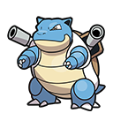

Pokémon Bleu
-

Tortank
Mon tout premier pokémon, sur gameboy color. Je ne me souviens de rien d'autre que d'avoir ce Tortank et un Léviator. Type : Eau.
-

Léviator
Ces deux pokémon sont perdus, la sauvegarde a été réécrite. RIP. Type : Eau/Vol.